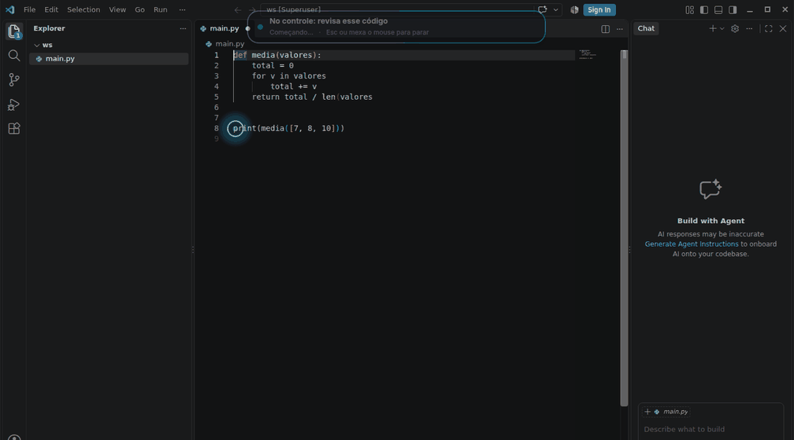
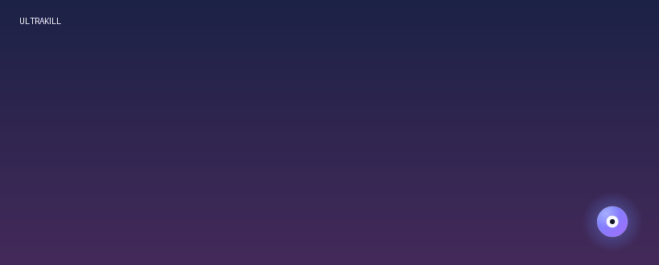
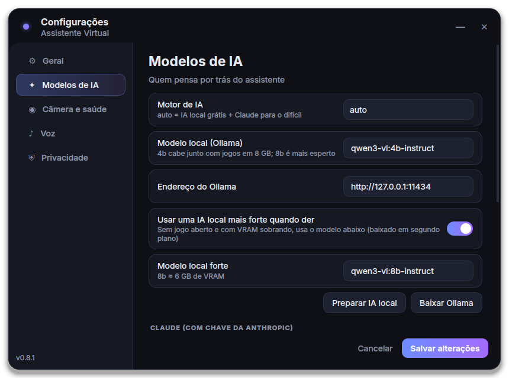
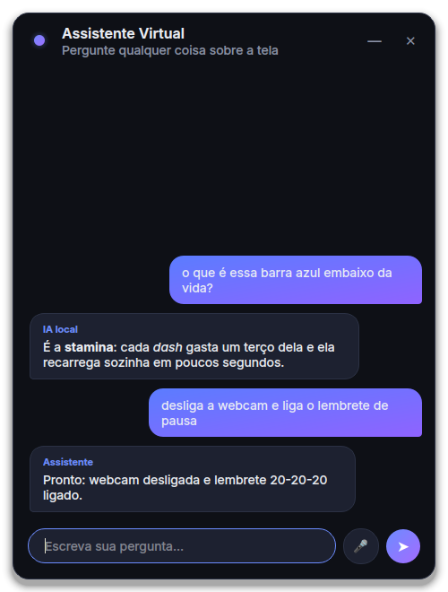
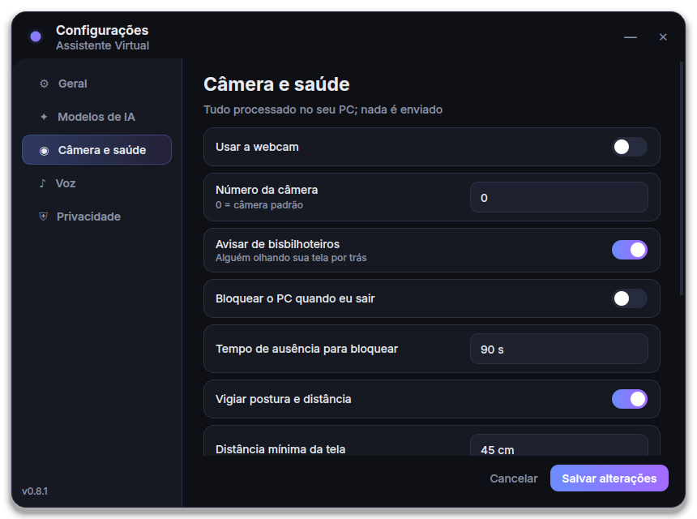

Modo gamer
Analisa a tela a cada ~2,5 s e avisa do que você não viu: inimigo por trás, vida baixa, lava, anoitecendo. Fica quieto quando você já está vendo.
Avisa do inimigo chegando por trás, aponta a vírgula esquecida no seu código e responde "pra que serve isso?" olhando o que está na tela. Roda no seu PC, de graça, com a IA na sua placa de vídeo.
Ele detecta sozinho se você está jogando ou trabalhando e muda o jeito de ajudar.
Analisa a tela a cada ~2,5 s e avisa do que você não viu: inimigo por trás, vida baixa, lava, anoitecendo. Fica quieto quando você já está vendo.
Com a ponte do VS Code ele sabe o erro exato ("',' esperado na linha 12"), espera você parar de digitar e avisa.
"Pesquisa isso", "organiza meus downloads", "corrige esse erro": usa o PC como uma pessoa, vendo a tela inteira. Antes de enviar ou apagar algo, pede a sua confirmação.
Um modelo de visão roda na sua placa de vídeo pelo Ollama. Com uma chave de API (Claude, ChatGPT, Gemini, Grok, DeepSeek, OpenRouter e outros), a nuvem entra só nas perguntas difíceis.
Ouve sem precisar chamar e entende se a frase era para ele ou para seus amigos no Discord. Você começa a falar, ele cala.
Pela webcam, só no seu PC: avisa quem está espiando, a distância da tela e a postura, baixa o brilho e lembra da pausa 20-20-20.
"Lembra que eu prefiro respostas curtas", "nesse jogo, só me avisa de projéteis". A memória fica só no seu computador.
Ao abrir um jogo novo, pesquisa na Steam, na Wikipedia e na wiki do Fandom e monta um guia da HUD e dos inimigos.
Um orbe flutuante mostra o que o assistente está fazendo. Os avisos deslizam num balão que não rouba o foco, deixa o clique passar para o jogo e nem aparece nas capturas de tela.
Os pedidos comuns são entendidos na hora, sem IA. Clique num pedido e veja o que acontece.
Gravações da interface de verdade.





Com a IA local, nenhuma captura sai do computador. Quando você usa uma IA na nuvem, a imagem vai só para a análise e nunca é salva pelo assistente.
Versão 0.9.11 · Windows 10 e 11 (64 bits)
Deixe todos na mesma pasta e abra o AssistenteVirtual-Setup.exe. O navegador pode perguntar se permite baixar vários arquivos: clique em Permitir.
Ou pelo PowerShell, que retoma se a internet cair e confere o SHA-256 de cada parte:
irm https://mello13256.github.io/Assistente-Virtual/instalar.ps1 | iex& ([scriptblock]::Create((irm https://mello13256.github.io/Assistente-Virtual/instalar.ps1))) -LeveAssistenteVirtual-Instalador.exe: um arquivo só, de poucos MB.O mais importante é a placa de vídeo: é nela que roda a IA local.
Sim. Por padrão tudo roda com a IA local, sem custo. A nuvem é opcional: só é usada se você colocar uma chave de API (Anthropic, OpenAI, Google e mais 18 opções), e há um limite diário de gasto (padrão US$ 3) que você controla.
Só para baixar e instalar a IA local na primeira vez, para as vozes neurais (sem internet ele usa a voz offline) e para a IA da nuvem, se você usar. A análise da tela com a IA local funciona offline.
O modelo padrão cabe junto com a maioria dos jogos numa placa de 8 GB. Com VRAM sobrando e nenhum jogo aberto, ele usa um modelo maior e mais esperto. Se o jogo engasgar, aumente o intervalo do modo gamer.
Por padrão ele não dá informação tática em tempo real em jogos como Valorant, CS2, LoL e Fortnite, porque isso pode violar os termos de uso e render banimento.
O instalador ainda não é assinado digitalmente, por isso o aviso. Clique em Mais informações → Executar assim mesmo. Os arquivos vêm direto das versões publicadas no GitHub, e o comando do PowerShell confere o SHA-256 de cada um.
É um falso positivo comum em programas novos sem assinatura digital, ainda mais num que lê a tela e controla o mouse e o teclado, que é justamente o que esses antivírus vigiam. Não precisa desligar o antivírus: restaure o arquivo da quarentena e adicione uma exceção para a pasta %LOCALAPPDATA%\Programs\AssistenteVirtual (e para o instalador, se foi ele o bloqueado). No Norton: Segurança → Histórico → o item → Restaurar e excluir este arquivo. Se quiser ajudar, envie o arquivo ao fabricante como falso positivo.
O assistente confere se há versão nova ao abrir e a cada 12 horas. Quando tiver, é só dizer "atualiza" ou usar o menu. Se o pacote pesado não mudou, ele baixa só o app (~200 MB).
Diga "quero te desinstalar": ele mostra tudo o que vai sair (inclusive a IA local) e só remove se você confirmar. Ou em Configurações do Windows → Aplicativos → Assistente Virtual → Desinstalar. Por esse caminho, suas configurações e a memória ficam em %APPDATA%\AssistenteVirtual, se quiser apagar também.
Instala sem administrador, e dá para desinstalar a qualquer momento.